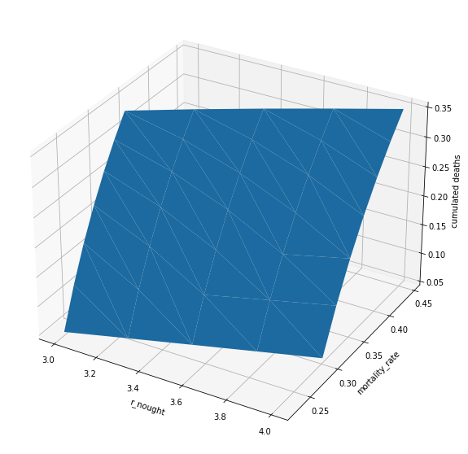

Implementation for Question B¶
import numpy as np
import pandas as pd
import math
from scipy.integrate import odeint
import matplotlib.pyplot as plt
from mpl_toolkits.mplot3d import Axes3D
# gamma is the average recovery rate such that 1/gamma is the average time it takes for an
# individual to recover from the disease
# the official time to self-quarantine for COVID-19 is 14 days, so we will set gamme to 1/14
# The infectious power of the disease is between 2 and 5. It depends on countermeasures implemented.
# i.e., R0 = 5 if nothing is done, and it can be as low as 2 if people are careful.
def get_beta_gamma(r_nought, recovery_time, mortality_rate):
"""Returns beta and gamma based
on recovery time and infectious power R"""
gamma = 1./recovery_time
beta = r_nought*(gamma+mortality_rate)
return beta,gamma
def deriv(y, t, N, beta, gamma, mu):
S, I, R, D = y
dSdt = -beta * S * I / N
dIdt = beta * S * I / N - gamma * I - mu * I
dRdt = gamma * I
dDdt = mu * I
return dSdt, dIdt, dRdt, dDdt
# Initialize r_nought, the recovery time of the disease, mortality rate of the disease
r_nought = 3
recovery_time = 14
mu = 0.004
# Determine beta and gamma
beta, gamma = get_beta_gamma(r_nought = r_nought, recovery_time = recovery_time, mortality_rate = mu)
print('beta:', beta)
print('gamma:', gamma)
# Population size
N = 1000
# Initial conditions: 1 Infected, no Recovered individuals, no dead individuals
I0, R0 , D0 = 3, 0, 0 #case zero
# All others, S=N-I-R susceptible, initially S0=N-I0-R0-D0
S0 = N - I0 - R0 - D0 #normalization
# Initial conditions vector
y0 = S0, I0, R0, D0
# A grid of time points (in days)
t = np.linspace(0, 365, 365)
# Integrate the SIR equations over the time grid, t.
ret = odeint(deriv, y0, t, args=(N, beta, gamma, mu))
S, I, R, D = ret.T # return vector
#find R_effective = 1 time
t_1 = 0
for time in range(0,len(S)):
if r_nought*S[time]/N < 1:
t_1 = time
break
print("R_eff=1 at t=", t_1, "d")
# Plot the data on three separate curves for S(t), I(t) and R(t)
fig = plt.figure(facecolor='w')
ax = fig.add_subplot(111, axisbelow=True)
ax.plot(t, S/N, 'b', alpha=0.5, lw=2, label='S/usceptible')
ax.plot(t, I/N, 'r', alpha=0.5, lw=2, label='I/nfected')
ax.plot(t, R/N, 'g', alpha=0.5, lw=2, label='R/ecovered')
ax.plot(t, D/N, 'y', alpha=0.5, lw=2, label='D/eceased')
ax.plot(t, r_nought*S/N, 'gray', alpha=0.5, lw=2, label='R_effective')
ax.set_xlabel('Time / days')
ax.set_ylabel('Fraction')
ax.set_ylim(0,2.2)
ax.vlines(t_1, 0, 1, colors='k', linestyles='dashed')
ax.yaxis.set_tick_params(length=0)
ax.xaxis.set_tick_params(length=0)
ax.grid(b=True, which='major', c='w', lw=2, ls='-')
legend = ax.legend()
legend.get_frame().set_alpha(0.5)
for spine in ('top', 'right', 'bottom', 'left'):
ax.spines[spine].set_visible(False)
plt.show()
print('Fraction of deceased people:', D[-1]/N)
beta: 0.22628571428571428
gamma: 0.07142857142857142
R_eff=1 at t= 44 d
Fraction of deceased people: 0.04988544739725214
Question b¶
def solve_question_b (r_nought, mortality_rate, plot = False):
# Initialize r_nought, the recovery time of the disease, mortality rate of the disease
r_nought = r_nought
recovery_time = 14
mu = mortality_rate
# Determine beta and gamma
beta, gamma = get_beta_gamma(r_nought = r_nought, recovery_time = recovery_time, mortality_rate = mu)
# Population size
N = 1000
# Initial conditions: 1 Infected, no Recovered individuals, no dead individuals
I0, R0 , D0 = 3, 0, 0 #case zero
# All others, S=N-I-R susceptible, initially S0=N-I0-R0-D0
S0 = N - I0 - R0 - D0 #normalization
# Initial conditions vector
y0 = S0, I0, R0, D0
# A grid of time points (in days)
t = np.linspace(0, 365, 365)
# Integrate the SIR equations over the time grid, t.
ret = odeint(deriv, y0, t, args=(N, beta, gamma, mu))
S, I, R, D = ret.T # return vector
fraction_dead = D[-1]/N
if plot == True:
#find R_effective = 1 time
t_1 = 0
for time in range(0,len(S)):
if r_nought*S[time]/N < 1:
t_1 = time
break
# print("R_eff=1 at t=", t_1, "d")
# Plot the data on three separate curves for S(t), I(t) and R(t)
fig = plt.figure(facecolor='w')
ax = fig.add_subplot(111, axisbelow=True)
ax.plot(t, S/N, 'b', alpha=0.5, lw=2, label='S/usceptible')
ax.plot(t, I/N, 'r', alpha=0.5, lw=2, label='I/nfected')
ax.plot(t, R/N, 'g', alpha=0.5, lw=2, label='R/ecovered')
ax.plot(t, D/N, 'y', alpha=0.5, lw=2, label='D/eceased')
ax.plot(t, r_nought*S/N, 'gray', alpha=0.5, lw=2, label='R_effective')
ax.set_xlabel('Time / days')
ax.set_ylabel('Fraction')
ax.set_ylim(0,2.2)
ax.vlines(t_1, 0, 1, colors='k', linestyles='dashed')
ax.yaxis.set_tick_params(length=0)
ax.xaxis.set_tick_params(length=0)
ax.grid(b=True, which='major', c='w', lw=2, ls='-')
ax.set_title(rf"r_nought: {round(r_nought, 2)}, $\mu$: {mu}")
plt.text(0.2, 0.4, f"D = t(365): {round(fraction_dead, 4)}")
legend = ax.legend()
legend.get_frame().set_alpha(0.5)
for spine in ('top', 'right', 'bottom', 'left'):
ax.spines[spine].set_visible(False)
plt.show()
return beta, gamma, fraction_dead
# range of r_nought:
r_nought = [*range(300, 401, 25)]
r_nought_list = []
for x in r_nought:
r_nought_list.append(x/100)
# range of mortality rate:
mu = [*range(40, 401, 60)]
mu_list = []
for x in mu:
mu_list.append(x/10000)
# Create initial, empty Dataframe
df_cum_deaths = pd.DataFrame(columns = ['r_nought',
'infection_rate',
'recovery_rate',
'mortality_rate',
'cum_deaths'])
for r_nought in r_nought_list:
for mortality_rate in mu_list:
beta, gamma, fraction_dead = solve_question_b(r_nought, mortality_rate, plot=False)
# Store the basic reproduction number, the mortality rate and the cumulated number of deaths in a dictionary
dict_ = {'r_nought': r_nought,
'infection_rate': beta,
'recovery_rate': gamma,
'mortality_rate': mortality_rate,
'cum_deaths': fraction_dead}
# Append the data of dictionary to the dataframe
df_cum_deaths=df_cum_deaths.append(dict_ , ignore_index=True)
# Plotting
X = list(df_cum_deaths.iloc[:, 0])
Y = list(df_cum_deaths.iloc[:, 1])
Z = list(df_cum_deaths.iloc[:, -1])
fig = plt.figure(figsize=(20, 10))
ax = fig.add_subplot(111, projection='3d')
ax.plot_trisurf(X, Y, Z, linewidth=0.2, antialiased=True)
ax.set_xlabel('r_nought')
ax.set_ylabel('mortality_rate')
ax.set_zlabel('cumulated deaths')
plt.show()

df_cum_deaths.iloc[:, 1]
0 0.226286
1 0.244286
2 0.262286
3 0.280286
4 0.298286
5 0.316286
6 0.334286
7 0.245143
8 0.264643
9 0.284143
10 0.303643
11 0.323143
12 0.342643
13 0.362143
14 0.264000
15 0.285000
16 0.306000
17 0.327000
18 0.348000
19 0.369000
20 0.390000
21 0.282857
22 0.305357
23 0.327857
24 0.350357
25 0.372857
26 0.395357
27 0.417857
28 0.301714
29 0.325714
30 0.349714
31 0.373714
32 0.397714
33 0.421714
34 0.445714
Name: infection_rate, dtype: float64
Experiments with subplotting¶
df_cum_deaths
| r_nought | infection_rate | recovery_rate | mortality_rate | cum_deaths | |
|---|---|---|---|---|---|
| 0 | 3.00 | 0.226286 | 0.071429 | 0.004 | 0.049885 |
| 1 | 3.00 | 0.244286 | 0.071429 | 0.010 | 0.115524 |
| 2 | 3.00 | 0.262286 | 0.071429 | 0.016 | 0.172154 |
| 3 | 3.00 | 0.280286 | 0.071429 | 0.022 | 0.221510 |
| 4 | 3.00 | 0.298286 | 0.071429 | 0.028 | 0.264909 |
| 5 | 3.00 | 0.316286 | 0.071429 | 0.034 | 0.303368 |
| 6 | 3.00 | 0.334286 | 0.071429 | 0.040 | 0.337686 |
| 7 | 3.25 | 0.245143 | 0.071429 | 0.004 | 0.050660 |
| 8 | 3.25 | 0.264643 | 0.071429 | 0.010 | 0.117317 |
| 9 | 3.25 | 0.284143 | 0.071429 | 0.016 | 0.174826 |
| 10 | 3.25 | 0.303643 | 0.071429 | 0.022 | 0.224948 |
| 11 | 3.25 | 0.323143 | 0.071429 | 0.028 | 0.269020 |
| 12 | 3.25 | 0.342643 | 0.071429 | 0.034 | 0.308077 |
| 13 | 3.25 | 0.362143 | 0.071429 | 0.040 | 0.342927 |
| 14 | 3.50 | 0.264000 | 0.071429 | 0.004 | 0.051233 |
| 15 | 3.50 | 0.285000 | 0.071429 | 0.010 | 0.118644 |
| 16 | 3.50 | 0.306000 | 0.071429 | 0.016 | 0.176803 |
| 17 | 3.50 | 0.327000 | 0.071429 | 0.022 | 0.227492 |
| 18 | 3.50 | 0.348000 | 0.071429 | 0.028 | 0.272063 |
| 19 | 3.50 | 0.369000 | 0.071429 | 0.034 | 0.311561 |
| 20 | 3.50 | 0.390000 | 0.071429 | 0.040 | 0.346805 |
| 21 | 3.75 | 0.282857 | 0.071429 | 0.004 | 0.051660 |
| 22 | 3.75 | 0.305357 | 0.071429 | 0.010 | 0.119635 |
| 23 | 3.75 | 0.327857 | 0.071429 | 0.016 | 0.178279 |
| 24 | 3.75 | 0.350357 | 0.071429 | 0.022 | 0.229391 |
| 25 | 3.75 | 0.372857 | 0.071429 | 0.028 | 0.274335 |
| 26 | 3.75 | 0.395357 | 0.071429 | 0.034 | 0.314163 |
| 27 | 3.75 | 0.417857 | 0.071429 | 0.040 | 0.349701 |
| 28 | 4.00 | 0.301714 | 0.071429 | 0.004 | 0.051982 |
| 29 | 4.00 | 0.325714 | 0.071429 | 0.010 | 0.120380 |
| 30 | 4.00 | 0.349714 | 0.071429 | 0.016 | 0.179390 |
| 31 | 4.00 | 0.373714 | 0.071429 | 0.022 | 0.230820 |
| 32 | 4.00 | 0.397714 | 0.071429 | 0.028 | 0.276044 |
| 33 | 4.00 | 0.421714 | 0.071429 | 0.034 | 0.316120 |
| 34 | 4.00 | 0.445714 | 0.071429 | 0.040 | 0.351880 |
def solve_question_b (r_nought_list, mortality_rate_list, plot = False):
# Create initial, empty Dataframe
df_cum_deaths = pd.DataFrame(columns = ['r_nought',
'infection_rate',
'recovery_rate',
'mortality_rate',
'cum_deaths'])
for r_nought in r_nought_list:
for mortality_rate in mortality_rate_list:
# Initialize r_nought, the recovery time of the disease, mortality rate of the disease
r_nought = r_nought
recovery_time = 14
mu = mortality_rate
# Determine beta and gamma
beta, gamma = get_beta_gamma(r_nought = r_nought, recovery_time = recovery_time, mortality_rate = mu)
# Population size
N = 1000
# Initial conditions: 1 Infected, no Recovered individuals, no dead individuals
I0, R0 , D0 = 3, 0, 0 #case zero
# All others, S=N-I-R susceptible, initially S0=N-I0-R0-D0
S0 = N - I0 - R0 - D0 #normalization
# Initial conditions vector
y0 = S0, I0, R0, D0
# A grid of time points (in days)
t = np.linspace(0, 365, 365)
# Integrate the SIR equations over the time grid, t.
ret = odeint(deriv, y0, t, args=(N, beta, gamma, mu))
S, I, R, D = ret.T # return vector
fraction_dead = D[-1]/N
# Store the basic reproduction number, the mortality rate and the cumulated number of deaths in a dictionary
dict_ = {'r_nought': r_nought,
'infection_rate': beta,
'recovery_rate': gamma,
'mortality_rate': mu,
'cum_deaths': fraction_dead}
# Append the data of dictionary to the dataframe
df_cum_deaths=df_cum_deaths.append(dict_, ignore_index=True)
#find R_effective = 1 time
t_1 = 0
for time in range(0,len(S)):
if r_nought*S[time]/N < 1:
t_1 = time
break
# Plotting
len_r_nought = len(r_nought_list)
len_mu = len(mortality_rate_list)
fig, ax = plt.subplots(len_r_nought, len_mu, figsize=(15,7))
ax.plot(t, S/N, 'b', alpha=0.5, lw=2, label='S/usceptible')
ax.plot(t, I/N, 'r', alpha=0.5, lw=2, label='I/nfected')
ax.plot(t, R/N, 'g', alpha=0.5, lw=2, label='R/ecovered')
ax.plot(t, D/N, 'y', alpha=0.5, lw=2, label='D/eceased')
ax.plot(t, r_nought*S/N, 'gray', alpha=0.5, lw=2, label='R_effective')
ax.set_xlabel('Time / days')
ax.set_ylabel('Fraction')
ax.set_ylim(0,2.2)
ax.vlines(t_1, 0, 1, colors='k', linestyles='dashed')
ax.yaxis.set_tick_params(length=0)
ax.xaxis.set_tick_params(length=0)
ax.grid(b=True, which='major', c='w', lw=2, ls='-')
ax.set_title(rf"r_nought: {round(r_nought, 2)}, $\mu$: {mu}")
plt.text(0.2, 0.4, f"D = t(365): {round(fraction_dead, 4)}")
legend = ax.legend()
legend.get_frame().set_alpha(0.5)
for spine in ('top', 'right', 'bottom', 'left'):
ax.spines[spine].set_visible(False)
plt.show()
# fig_all.subplots_adjust(left=0, right=1, bottom=0, top=1, hspace=0.05, wspace=0.05)
# for i in range(len_r_nought * len_mu):
# plt.subplot(len_r_nought, len_mu, i+1)
# fig_all.add_subplot(len_r_nought, len_mu,i+1), plt.xticks([]), plt.yticks([])
# fig = plt.figure(facecolor='w')
# fig, ax = fig.add_subplot(111, axisbelow=True)
return df_cum_deaths